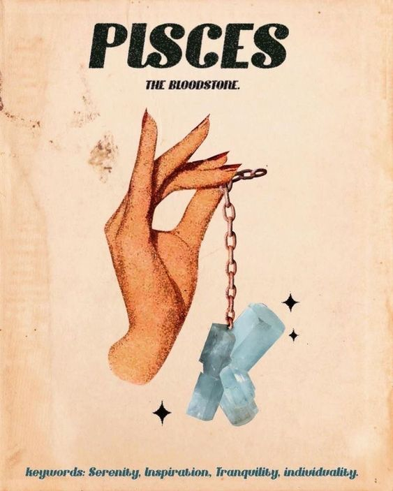

Personality Traits:
Pisces, symbolized by the two fish swimming in opposite directions, is known for its empathy, intuition, and artistic talent. Ruled by Neptune, Pisceans are deeply compassionate and sensitive, often feeling the emotions of those around them. They possess a vivid imagination and a dreamy nature, leading them to explore creative and spiritual realms. Pisceans are altruistic, often putting the needs of others before their own, and they have a strong desire to help those in need.
Despite their gentle and sometimes mystical demeanor, Pisceans are remarkably adaptable and resilient. They can navigate life's ups and downs with grace, drawing strength from their inner world and intuition. Pisceans value deep, soulful connections with others, and they are often drawn to relationships that are emotionally and spiritually fulfilling.
Personality Traits:
- Empathetic and Intuitive: Pisceans have a natural ability to understand and empathize with the emotions of others, guided by their strong intuition.
- Artistic and Creative: They possess a rich imagination and creative spirit, often excelling in the arts and other creative endeavors.
- Altruistic and Compassionate: Their compassionate nature drives them to help others and make a positive impact in the world.
- Adaptable and Resilient: Despite their perceived sensitivity, Pisceans are capable of adapting to change and overcoming challenges with resilience.
Likes:
Pisceans enjoy activities that nurture their spirit and creativity, such as music, art, and meditation. They appreciate moments of solitude that allow them to connect with their inner selves and the universe. Pisceans value deep, meaningful relationships and seek connections that transcend the superficial. They are drawn to nature and water, finding peace and solace in natural settings.
Career and Ambitions:
Pisceans thrive in careers that allow them to express their creativity and compassion. They may be drawn to the arts, healing professions, or roles that involve caring for others, such as healthcare, social work, or counseling. Pisceans' intuition and insight can also make them excellent in fields that require understanding of human behavior, such as psychology or spirituality. Their ambition is often driven by a desire to make a meaningful difference in the lives of others and to bring beauty and healing to the world.
I Recommend watching this!
Get to know your fellow Pisces friends more!